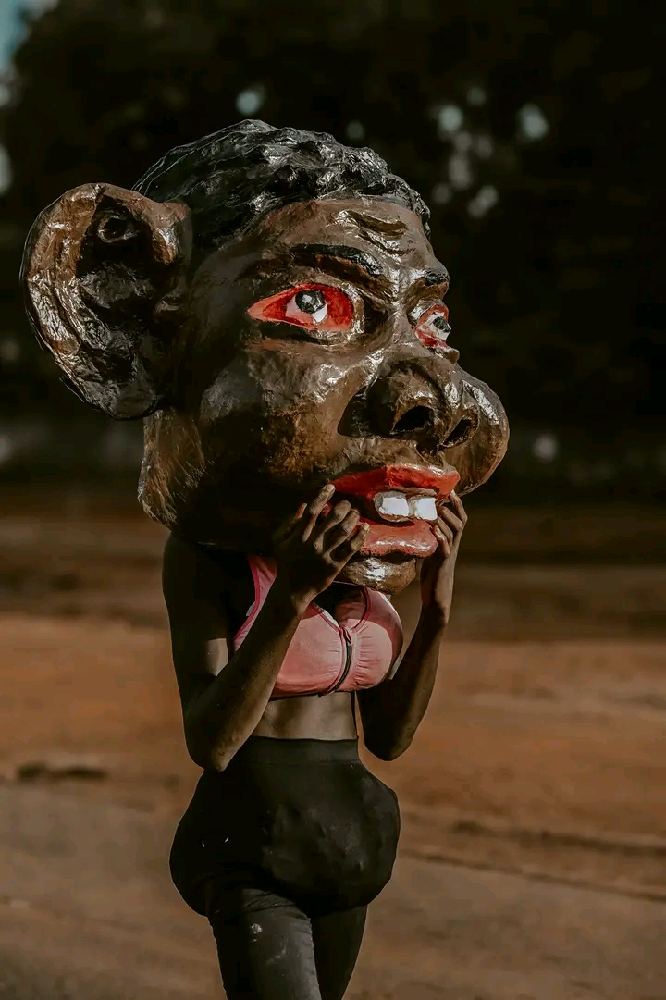
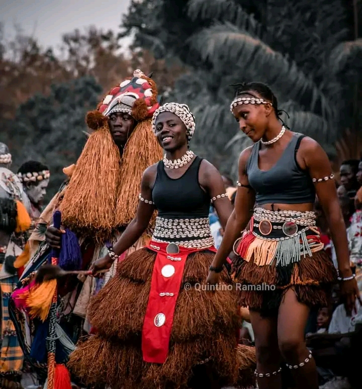

Cultura da Guiné-Bissau
A cultura da Guiné-Bissau é rica e diversificada, formada por vários grupos étnicos que vivem em harmonia. Cada grupo possui suas próprias tradições, línguas, danças e costumes.



A música tradicional, como o gumbe, é muito popular e representa a identidade nacional. As festas tradicionais, cerimónias e celebrações são momentos importantes para a comunidade.
O artesanato também é uma parte importante da cultura, incluindo esculturas em madeira, tecidos tradicionais e objetos feitos à mão. Essas expressões culturais tornam o país ainda mais interessante para visitantes.


